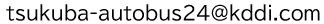

つくば市で自動運転バスの実証実験を開始します。
KDDI株式会社は茨城県つくば市と連携して、内閣府「先端的サービスの開発・構築及び規制・制度改革に関する調査事業」の取り組みとして、2025年1月9日から自動運転バスの走行実証を実施します。
つくば市における自動運転バスの社会実装にあたり、持続可能な事業体制の構築とサービスの導入検討を実施します。また、自動運転バスの実証を通じて、自動運転バスが周辺交通に与える影響を調査し、交通影響の軽減に関する安全な方策を検証します。
自動運転バスが周辺交通に与える影響調査にあたり、交差点とバス停に定点カメラを設置し、交通状況を撮影した映像を下記の通り活用いたします。
| ・定点カメラ設置期間 | ： | 2025年1月9日～1月24日 |
| ・定点カメラ設置台数 | ： | 3台 |
| ・定点カメラ設置場所 | ： | 以下の3ヶ所 ① 交差点：筑波大学松見口（信号手前の街灯） ② 天久保池バス停（バス停シェルター屋根） ③ 吾妻小学校前バス停（つくばスタートアップセンター入り口付近） |
| ・撮影データ活用目的 | ： | 以下の通り ① 自動運転バス周辺の交通状況 ② 自動運転バスの速度 ③ 自動運転バス周辺の車両数等 |
| ・撮影データ保存期間 | ： | 2025/3/21 |
撮影映像は、走行する車を判別するもので、通行している人を特定するものではありません。
映像に映る人の顔にはモザイク処理を行い、特定の個人を識別しないよう処理した上で、実証実験終了後は速やかにデータを全て削除いたします。
当社は個人情報の保護に関する法律、同法の政令や規則及び同法のガイドラインなどの遵守のための基本方針を策定する他、データの取得、利用、保存等を行う場合の基本的な取扱方法を整備しています。整備した取扱方法に従ってデータが取り扱われていることを責任者が確認しています。カメラ等データを取り扱う機器や電子媒体の盗難等を防止するための措置を講じるとともに、不正なアクセス又は不正なソフトウェアから保護する仕組みを導入しています。
本件に関するお問合せ：  （KDDI株式会社 本実証担当）